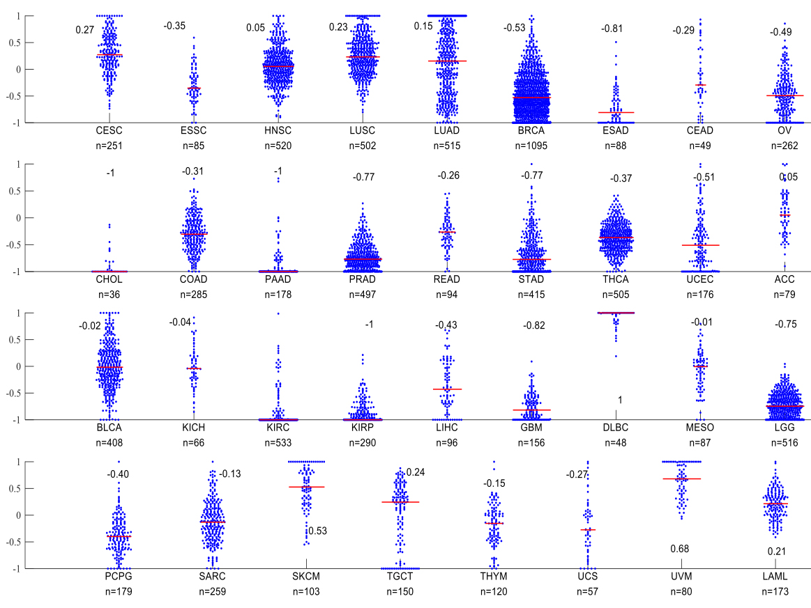

 The beeswarm plot is a one-dimensional scatter plot like "stripchart", but with closely-packed, non-overlapping points. . Here, the beeswarm plots with or without box plot are provided. It’s very helpful to see the distribution of certain kinds of samples. By clicking “by genes” button in Beeswarm web page, beeswarm plots for several genes in specific cancer types can be created; by clicking “by cancer” button in Beeswarm web page, beeswarm plots for the specific genes across different cancer types can be created for your research.
| Available Cancer Types | #Cases Shipped by BCR* | #Cases with Data* | Date Last Updated(mm/dd/yy) |
|---|---|---|---|
| Acute Myeloid Leukemia[LAML] | 200 | 200 | 05/31/16 |
| Adrenocortical carcinoma[ACC] | 80 | 80 | 05/31/16 |
| Bladder Urothelial Carcinoma[BLCA] | 412 | 412 | 05/27/16 |
| Brain Lower Grade Glioma[LGG] | 516 | 516 | 05/02/16 |
| Breast invasive carcinoma[BRCA] | 1100 | 1097 | 05/31/16 |
| Cervical squamous cell carcinoma and endocervical adenocarcinoma[CESC] | 308 | 307 | 05/26/16 |
| Cholangiocarcinoma[CHOL] | 36 | 36 | 05/31/16 |
| Colon adenocarcinoma[COAD] | 461 | 461 | 05/27/16 |
| Esophageal carcinoma[ESCA] | 185 | 185 | 05/31/16 |
| FFPE Pilot Phase II[FPPP] | 38 | 38 | 04/28/16 |
| Glioblastoma multiforme[GBM] | 529 | 528 | 05/27/16 |
| Head and Neck squamous cell carcinoma[HNSC] | 528 | 528 | 05/03/16 |
| Kidney Chromophobe[KICH] | 66 | 66 | 06/01/16 |
| Kidney renal clear cell carcinoma[KIRC] | 536 | 536 | 05/27/16 |
| Kidney renal papillary cell carcinoma[KIRP] | 291 | 291 | 05/31/16 |
| Liver hepatocellular carcinoma[LIHC] | 377 | 377 | 06/02/16 |
| Lung adenocarcinoma[LUAD] | 521 | 521 | 06/01/16 |
| Lung squamous cell carcinoma[LUSC] | 510 | 504 | 05/26/16 |
| Lymphoid Neoplasm Diffuse Large B-cell Lymphoma[DLBC] | 48 | 48 | 05/31/16 |
| Mesothelioma[MESO] | 87 | 87 | 04/08/16 |
| Ovarian serous cystadenocarcinoma[OV] | 586 | 586 | 05/31/16 |
| Pancreatic adenocarcinoma[PAAD] | 185 | 185 | 05/06/16 |
| Pheochromocytoma and Paraganglioma[PCPG] | 179 | 179 | 05/03/16 |
| Prostate adenocarcinoma[PRAD] | 498 | 498 | 05/31/16 |
| Rectum adenocarcinoma[READ] | 172 | 171 | 06/01/16 |
| Sarcoma[SARC] | 261 | 261 | 06/01/16 |
| Skin Cutaneous Melanoma[SKCM] | 470 | 470 | 04/08/16 |
| Stomach adenocarcinoma[STAD] | 445 | 443 | 05/26/16 |
| Testicular Germ Cell Tumors[TGCT] | 150 | 150 | 06/02/16 |
| Thymoma[THYM] | 124 | 124 | 05/31/16 |
| Thyroid carcinoma[THCA] | 507 | 507 | 05/05/16 |
| Uterine Carcinosarcoma[UCS] | 57 | 57 | 04/29/16 |
| Uterine Corpus Endometrial Carcinoma[UCEC] | 548 | 548 | 06/02/16 |
| Uveal Melanoma[UVM] | 80 | 80 | 04/29/16 |